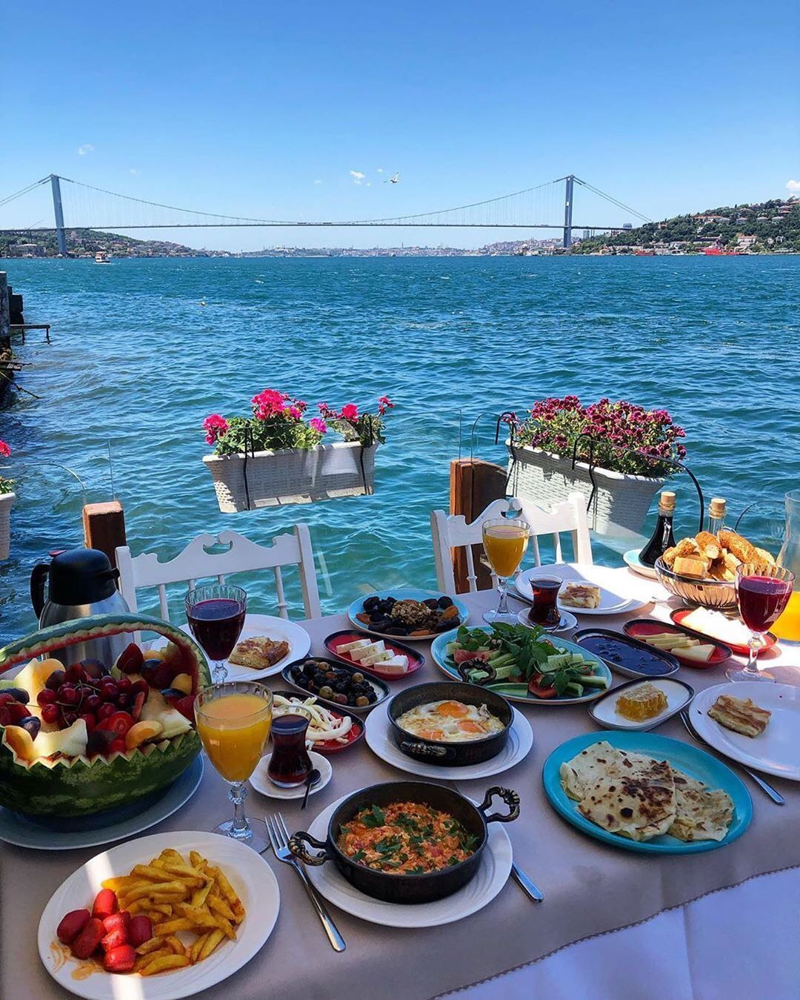
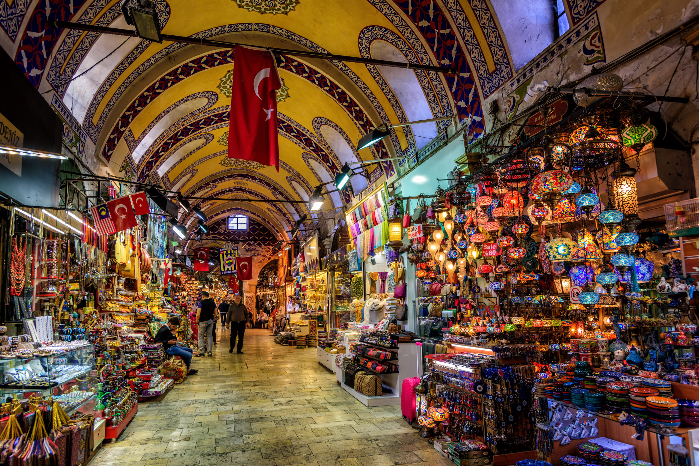
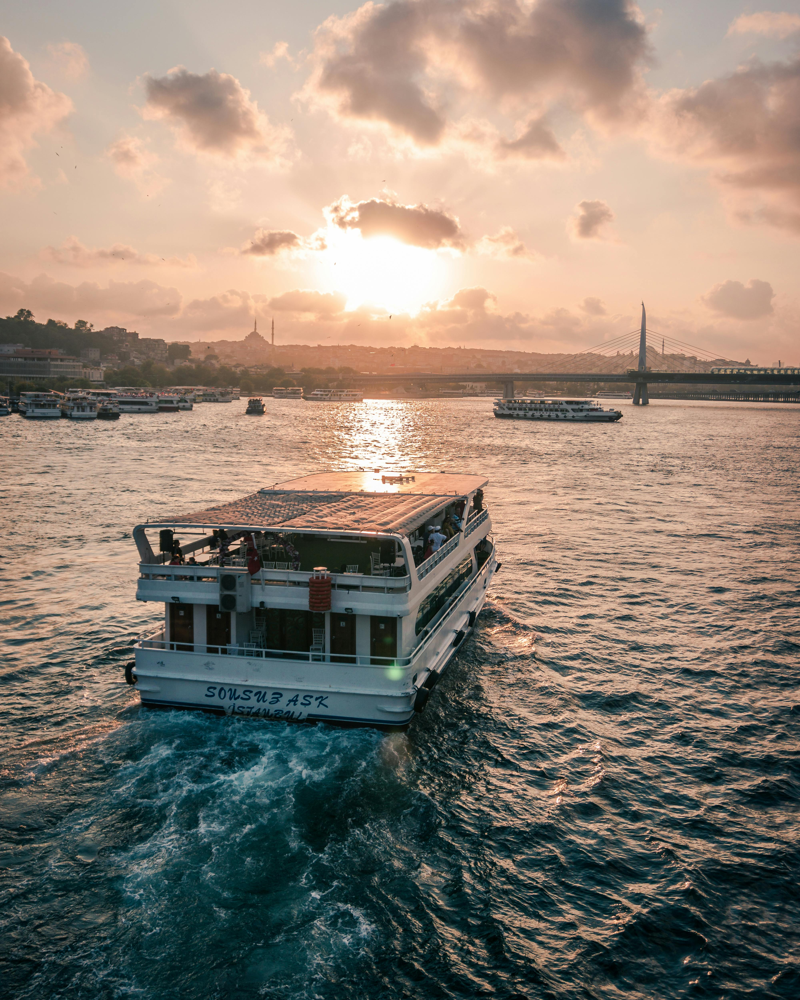

Explore Istanbul
Everything you need to know before visiting
Essential Info
- Currency: Turkish Lira (₺)
- Language: Turkish (basic phrases like "Merhaba" (Hello) and "Teşekkür ederim" (Thank you) are helpful). English is commonly spoken in tourist areas.
- Getting Around:
- -> Use Istanbulkart for public transport (trams, buses, metro, ferries).
- -> Taxis are affordable but ensure the meter is running.
- -> Walking is ideal in areas like Sultanahmet and Istiklal Street.

Top Attractions
- Hagia Sophia: A breathtaking architectural marvel that has served as a church, mosque, and now a mosque again.
- Topkapi Palace: Explore the opulent residence of Ottoman sultans with stunning views of the Bosphorus.
- Blue Mosque (Sultanahmet Mosque): Known for its magnificent blue tiles and serene interior.
- Grand Bazaar: A bustling marketplace with over 4,000 shops offering spices, textiles, and unique souvenirs.
- Dolmabahçe Palace: A luxurious palace reflecting European architectural styles.
- Galata Tower: A medieval tower offering panoramic views of Istanbul.

Best Restaurants
- For Turkish Cuisine:
- Karaköy Lokantası: Traditional Turkish dishes with a modern twist.
- Çiya Sofrası: Offers unique Anatolian flavors and regional specialties.
- Beyti: Famous for its kebabs and authentic Ottoman-style dishes.
- Seafood Restaurants:
- Balıkçı Sabahattin: A charming place in Sultanahmet for fresh seafood.
- Kumkapı Restaurants: A lively area with multiple seafood dining options.
- Desserts and Cafés:
- Hafiz Mustafa: Renowned for its baklava and Turkish delights.
- Mado: A go-to spot for Turkish ice cream (dondurma) and sweets.
- Rooftop Dining:
- 360 Istanbul: Offers contemporary cuisine and stunning city views.
- Mikla: A fine-dining restaurant with panoramic views of the Bosphorus.

Best Time to Visit
- Spring (April to May): Ideal weather with blooming tulips in parks.
- Fall (September to November): Mild temperatures and fewer crowds.
- Winter (December to February): Great for exploring without crowds but expect some rain.
- Avoid: July and August due to high heat and humidity.
.jpg)
Shopping in Istanbul
- Grand Bazaar: One of the world's oldest and largest covered markets with over 4,000 shops offering jewelry, carpets, spices, and more.
- Spice Bazaar: A vibrant market specializing in spices, teas, dried fruits, and traditional Turkish delights.
- Istiklal Street: A bustling pedestrian street lined with shops, boutiques, and international brands.
- Nişantaşı: A chic neighborhood known for high-end fashion boutiques, luxury brands, and stylish cafés.
- Shopping Malls:
- Istanbul Cevahir: One of the largest malls in Europe, featuring a wide range of shops, dining, and entertainment options.
- Zorlu Center: A modern mall offering designer brands, upscale dining, and a performing arts center.

Tips for Tourists
- Public Transport: Purchase an Istanbulkart for discounted fares.
- Dress Modestly: Especially when visiting mosques; women should bring a scarf to cover their heads.
- Beware of Scams: Avoid overly persistent street vendors or offers that seem too good to be true.
- Local Etiquette: Remove shoes before entering mosques and avoid public displays of affection.
- Tipping: Leave 5-10% in restaurants and round up taxi fares.
- Drinking Water: Bottled water is recommended.
- Shopping: Bargain politely in bazaars, but not in modern shops.

Bonus Experiences
- Day Trips:
- Princes’ Islands: A car-free retreat with historic charm.
- Bursa: Known for its thermal baths, mosques, and Iskender kebab.
- Sapanca Lake: Perfect for nature lovers.
- Hidden Gems:
- Balat and Fener Neighborhoods: Vibrant streets with colorful houses and cafés.
- Camlica Hill: Offers stunning views of Istanbul and the Bosphorus.
- Nightlife: Enjoy live music and a vibrant scene at places like Babylon or Reina (seasonal).
- Turkish Baths (Hammams):
- Çemberlitaş Hammam: A historic and popular spot for a traditional bath.
- Kılıç Ali Paşa Hammam: A beautifully restored experience.
